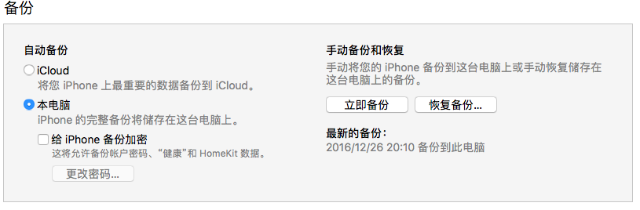
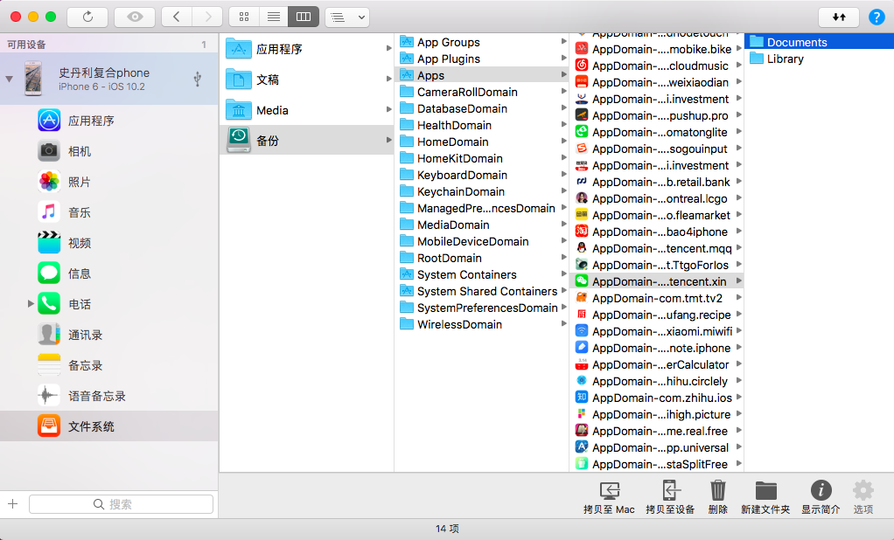

将iPhone插入Mac,使用iTunes进行整机备份。要注意不要选择加密

下载软件：iMazing 并运行 （截止至2017年01月07日，经测试仅iMazing可以导出iOS 10.2 的备份文件,iMazing收费，可自行搜索XX版）
选择备份,找到微信，将Document文件夹直接拖拽到本地

Document内部会有若干个uuid，就是一串字符，除了全是0的以外，其他的每一个文件夹对应着一个在你手机上登录过的微信号
文件夹内部存储的就是备份数据。Document/{uuid}/DB/MM.sqlite就是备份的数据库文件。导出的时候需要定位到这个文件。
注意！！！：在导出微信聊天记录的时候，不要动Document下面的东西，也不要将MM.sqlite拷贝出来。直接打开Document/{uuid}/DB/MM.sqlite即可